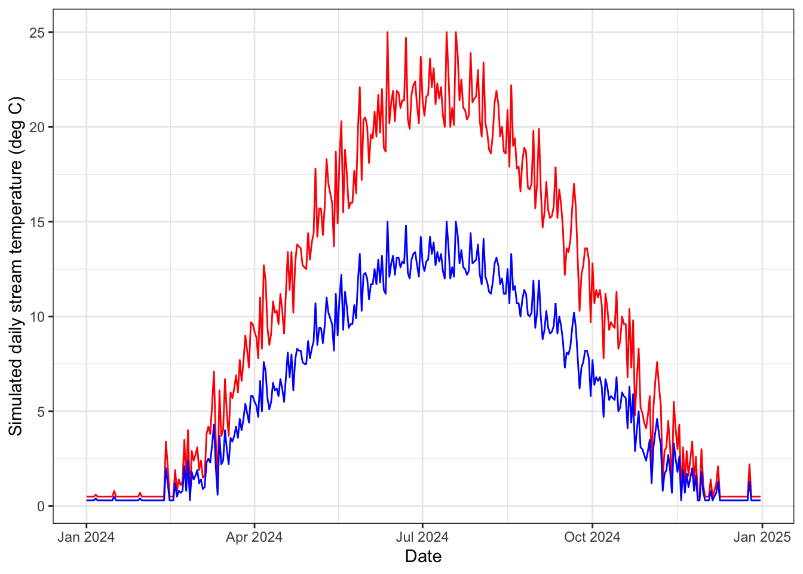
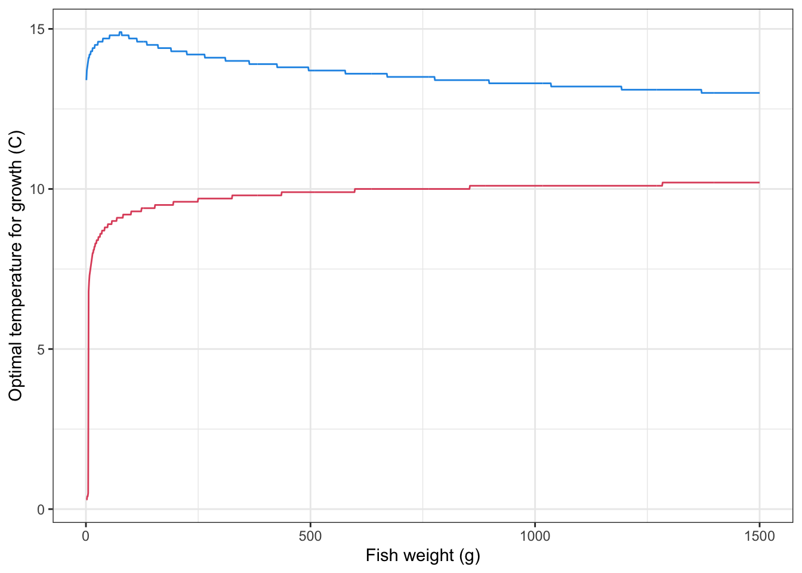
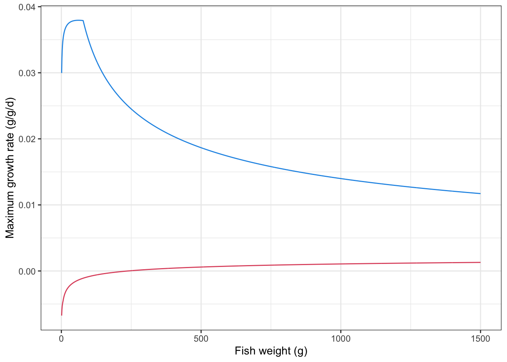
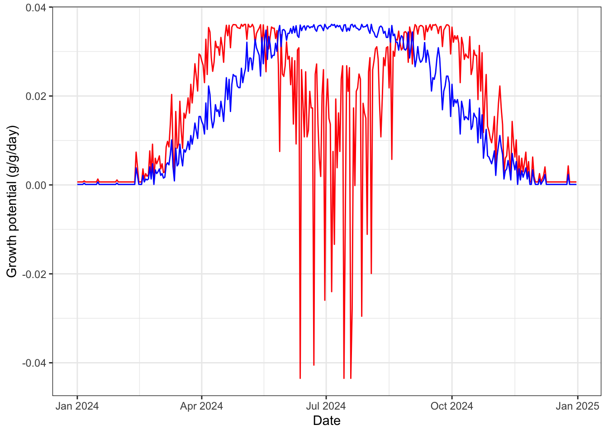
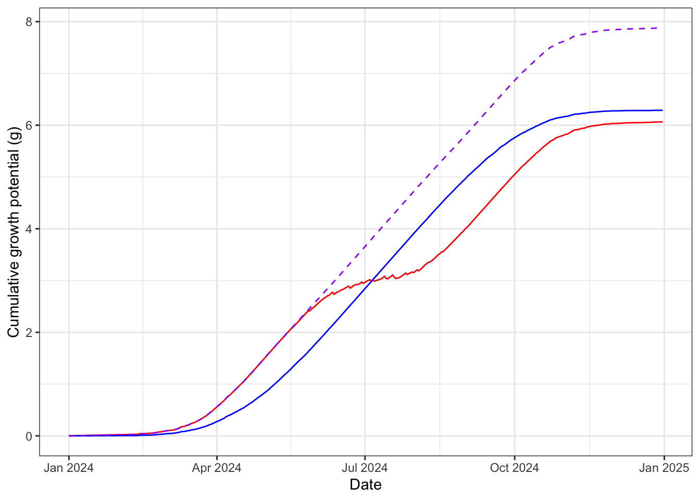
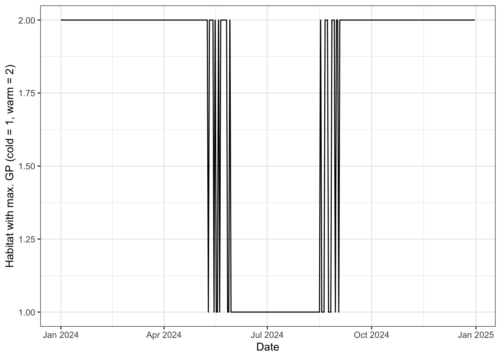
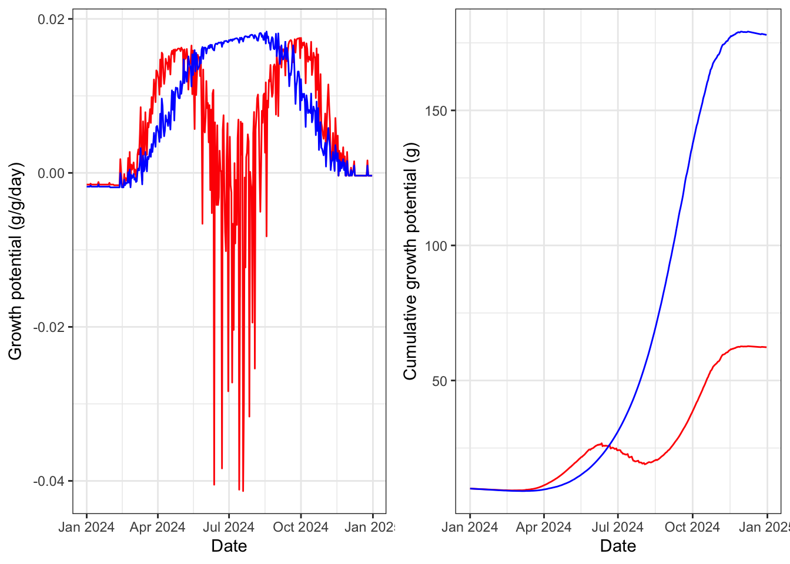
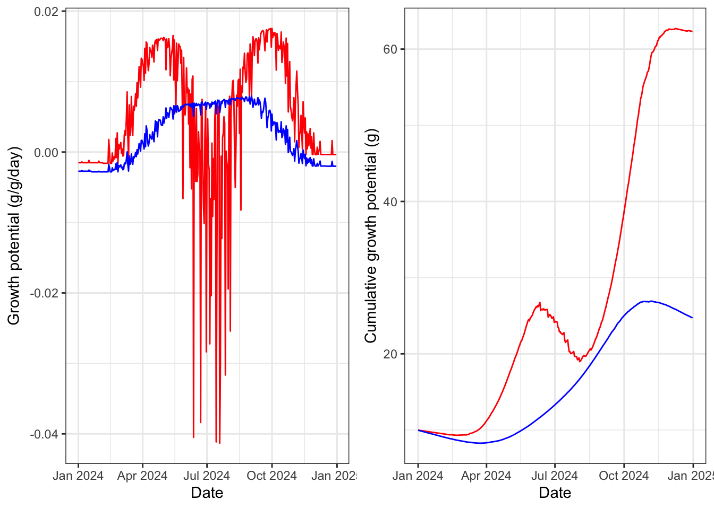

Code
library(tidyverse)
library(ggpubr)library(tidyverse)
library(ggpubr)Simulate thermal regimes as annual sine waves. Cold vs. Warm using simple multiplier.
# Set seed for reproducibility
set.seed(123)
# 1. Create a date range (1 year)
dates <- seq(as.Date("2024-01-01"), as.Date("2024-12-31"), by="day")
n <- length(dates)
doy <- as.numeric(format(dates, "%j")) # Day of year
# 2. Simulate Stream Temperature (Sine wave + Noise)
# Parameters: Midpoint, Amplitude, Offset
base_temp <- 10 # Average annual temperature
amplitude <- 12 # Seasonal fluctuation amplitude
# Peak temperature occurs late in the year (July/Aug)
stream_temp <- base_temp + amplitude * sin(2 * pi * (doy - 100) / 365)
# 3. Add random noise (daily weather variation)
noise <- rnorm(n, mean = 0, sd = 1.5)
simulated_temp <- stream_temp + noise
# 4. Force values near 0 to small postive, max = 25
simulated_temp[simulated_temp < 0.5] <- 0.5
simulated_temp[simulated_temp > 25] <- 25
# 4. Simulate cold regime using a multiplier
simulated_temp_cold <- simulated_temp*0.6
# 4. Create Data Frame
temp_df <- tibble(date = dates,
doy = doy,
temp_warm = round(simulated_temp, digits = 1),
temp_cold = round(simulated_temp_cold, digits = 1))
# 5. Plot the simulation
temp_df %>% ggplot() +
geom_line(aes(x = date, y = temp_warm), color = "red") +
geom_line(aes(x = date, y = temp_cold), color = "blue") +
theme_bw() +
xlab("Date") +
ylab("Simulated daily stream temperature (deg C)")
# function to retrieve water temperature in patch = patch and at doy/time = t
get_patchtemp <- function(t, patch) {
if (patch == "warm") {
temp_df$temp_warm[temp_df$doy == t]
} else {
temp_df$temp_cold[temp_df$doy == t]
}
}Build bioenergetics model, equations from Hanson et al. (1997), and general approach from A. Fullerton (https://github.com/aimeefullerton/growth_regime_IBM). Currently using O. mykiss parameters because the full suite of respiration estimates does not exist for bull trout, and hence no effect of ration.
Get BioEnergetics Parameters
fncGetBioEParms <- function(spp, pred.en.dens, prey.en.dens, oxy, pff, wt.nearest,
startweights = rep(initial.mass, numFish), pvals = rep(0.5, numFish), ration = rep(0.1, numFish)){
N.sites <- nrow(wt.nearest) #here, sites are fish in each reach
N.steps <- 1 #one time step
Species <- spp
SimMethod <- 1 #method that predicts growth
Pred <- pred.en.dens #predator energy density
Oxygen <- oxy #oxygen consumed
PFF <- pff #percent indigestible prey
stab.factor <- 0.5 #stability factor for other simulation methods
epsilon <- 0.5 #also for other simulation methods
endweights <- startweights*5
TotalConsumption <- rep(100, N.sites)
pvalues <- t(matrix(round(pvals, 5)))
sitenames <- t(matrix(wt.nearest[,"pid"]))
temperature <- t(wt.nearest[,"WT"])
prey.energy.density <- t(matrix(rep(prey.en.dens, N.sites)))
ration <- t(matrix(round(ration, 5)))
return(list(
"Species" = Species,
"SimMethod" = SimMethod,
"Wstart" = startweights,
"Endweights" = endweights,
"TotalConsumption" = TotalConsumption,
"pp "= pvalues,
"Temps" = temperature,
"N.sites" = N.sites,
"N.steps" = N.steps,
"sitenames" = sitenames,
"Pred" = Pred,
"prey.energy.density" = prey.energy.density,
"Oxygen" = Oxygen,
"stab.factor" = stab.factor,
"PFF" = PFF,
"epsilon" = epsilon,
"ration" = ration)
)
}Constants, hard-coded for O. mykiss. Could alternatively do for bull trout (constants commented out) but we don’t have parameter estimates for respiration equations that would allow growth to vary by ration size.
# Constants, hard-coded - using RATION instead of p-values
fncReadConstants <- function() {
# Get consumption constants
# Cons <- data.frame(
# ConsEQ = 3,
# CA = 0.1317,
# CB = -0.1396,
# CQ = 3.0,
# CTO = 15.8,
# CTM = 17.5,
# CTL = 21.0,
# CK1 = 0.06,
# CK4 = 0.38)
#
# # Get respiration constants
# Resp <- data.frame(
# RespEQ = 1,
# RA = 0.0009,
# RB = -0.1266,
# RQ = 0.0833,
# RTO = 0,
# RTM = 0,
# RTL = 0,
# RK1 = 1,
# RK4 = 0,
# ACT = 1,
# BACT = 0,
# SDA = 0.172)
#
# # Get Excretion / Egestion Constants
# Excr <- data.frame(
# ExcrEQ = 2,
# FA = 0.212,
# FB = -0.222,
# FG = 0.631,
# UA = 0.0314,
# UB = 0.58,
# UG = -0.299)
Cons <- data.frame(
ConsEQ = 4,
CA = 0.628,
CB = -0.3,
CQ = 5,
CTO = 20,
CTM = 20,
CTL = 24,
CK1 = 0.33,
CK4 = 0.2)
# Get respiration constants
Resp <- data.frame(
RespEQ = 1,
RA = 0.00264,
RB = -0.217,
RQ = 0.06818,
RTO = 0.0234,
RTM = 0,
RTL = 25,
RK1 = 1,
RK4 = 0.13,
ACT = 9.7,
BACT = 0.0405,
SDA = 0.172)
# Get Excretion / Egestion Constants
Excr <- data.frame(
ExcrEQ = 4,
FA = 0.212,
FB = -0.222,
FG = 0.631,
UA = 0.0314,
UB = 0.58,
UG = -0.299)
# Return the Constants
return(list("Consumption" = Cons,
"Respiration" = Resp,
"Excretion" = Excr))
}Consumption, respiration, and excretion equations
# Consumption Equation 1
ConsumptionEQ1 <- function(W, TEMP, PP, PREY, CA, CB, CQ) {
CMAX <- CA * (W ** CB) #max specific feeding rate (g_prey/g_pred/d)
CONS <<- (CMAX * PP * exp(CQ * TEMP)) #specific consumption rate (g_prey/g_pred/d) - grams prey consumed per gram of predator mass per day
CONSj <<- CONS * PREY #specific consumption rate (J/g_pred/d) - Joules consumed for each gram of predator for each day
return(list("CMAX" = CMAX, "CONS" = CONS, "CONSj" = CONSj))
}
# Consumption Equation 2
ConsumptionEQ2 <- function(W, TEMP, PP, PREY, CA, CB, CTM, CTO, CQ) {
Y <- log(CQ) * (CTM - CTO + 2)
Z <- log(CQ) * (CTM - CTO)
X <- (Z ^ 2 * (1 + (1 + 40 / Y) ^ .5) ^ 2) / 400
V <- (CTM - TEMP) / (CTM - CTO)
CMAX <- CA * (W ** CB)
CONS <- CMAX * PP * (V ** X) * exp(X * (1 - V))
CONSj <- CONS*PREY
return(list("CMAX" = CMAX, "CONS" = CONS, "CONSj" = CONSj))
}
# Consumption Equation #3: Temperature Dependence for cool-cold water species
ConsumptionEQ3 <- function(W, TEMP, PP, PREY, CA, CB, CK1, CTO, CQ, CK4, CTL, CTM) {
G1 <- (1 / (CTO - CQ)) * (log((0.98 * (1 - CK1)) / (CK1 * 0.02)))
L1 <- exp(G1 * (TEMP - CQ))
KA <- (CK1 * L1) / (1 + CK1 * (L1 - 1))
G2 <- (1 / (CTL - CTM)) * (log((0.98 * (1 - CK4)) / (CK4 * 0.02)))
L2 <- exp(G2 * (CTL - TEMP))
KB <- (CK4 * L2) / (1 + CK4 * (L2 - 1))
CMAX <- CA * (W ** CB) #max specific feeding rate (g_prey/g_pred/d)
CONS <- CMAX * PP * KA * KB #specific consumption rate (g_prey/g_pred/d) - grams prey consumed per gram of predator mass per day
CONSj <- CONS * PREY #specific consumption rate (J/g_pred/d) - Joules consumed for each gram of predator for each day
return(list("CMAX" = CMAX, "CONS" = CONS, "CONSj" = CONSj))
}
# Consumption Equation 3 that gives CONS based on RATION instead of PP
ConsumptionEQ4 <- function(W, TEMP, RATION, PREY, CA, CB, CK1, CTO, CQ, CK4, CTL, CTM) {
G1 <- (1 / (CTO - CQ)) * (log((0.98 * (1 - CK1)) / (CK1 * 0.02)))
L1 <- exp(G1 * (TEMP - CQ))
KA <- (CK1 * L1) / (1 + CK1 * (L1 - 1))
G2 <- (1 / (CTL - CTM)) * (log((0.98 * (1 - CK4)) / (CK4 * 0.02)))
L2 <- exp(G2 * (CTL - TEMP))
KB <- (CK4 * L2) / (1 + CK4 * (L2 - 1))
CMAX <- CA * (W ** CB) #max specific feeding rate (g_prey/g_pred/d)
RATION[RATION >= CMAX] <- CMAX[RATION >= CMAX]
CONS <- RATION * KA * KB #specific consumption rate (g_prey/g_pred/d) - grams prey consumed per gram of predator mass per day
CONSj <- CONS * PREY #specific consumption rate (J/g_pred/d) - Joules consumed for each gram of predator for each day
return(list("CMAX" = CMAX, "CONS" = CONS, "CONSj" = CONSj))
}
# Excretion Equation 1
ExcretionEQ1 <- function(CONS, CONSj, TEMP, PP, FA, UA) {
EG <- FA * CONS # egestion (fecal waste) in g_waste/g_pred/d
U <- UA * (CONS - EG) # excretion (nitrogenous waste) in g_waste/g_pred/d
EGj <- FA * CONSj # egestion in J/g/d
Uj <- UA * (CONSj - EGj) # excretion in J/g/d
return(list("EG" = EG, "EGj" = EGj, "U" = U, "Uj" = Uj))
}
# Excretion Equation 2
ExcretionEQ2 <- function(CONS, CONSj, TEMP, PP, FA, UA, FB, FG, UB, UG) {
EG <- FA * TEMP ^ FB * exp(FG * PP) * CONS # egestion (fecal waste) in g_waste/g_pred/d
U <- UA * TEMP ^ UB * exp(UG * PP) * (CONS - EG) # excretion (nitrogenous waste) in g_waste/g_pred/d
EGj <- EG * CONSj / CONS # egestion in J/g/d
Uj <- U * CONSj / CONS # excretion in J/g/d
return(list("EG" = EG, "EGj" = EGj, "U" = U, "Uj" = Uj))
}
# Excretion Equation 3 (W/ correction for indigestible prey as per Stewart 1983)
ExcretionEQ3 <- function(CONS, CONSj, TEMP, PP, FA, UA, FB, FG, UB, UG, PFF) {
#Note: In R, "F" means "FALSE", here we use EG as the variable name for egestion instead of F (as in the FishBioE 3.0 manual)
#Note: PFF = 0 assumes prey are entirely digestible, making this essentially the same as Equation 2
PE <- FA * (TEMP ** FB) * exp(FG * PP)
PF <- ((PE - 0.1) / 0.9) * (1 - PFF) + PFF
EG <- PF * CONS # egestion (fecal waste) in g_waste/g_pred/d
U <- UA * (TEMP ** UB) * (exp(UG * PP)) * (CONS - EG) # excretion (nitrogenous waste) in g_waste/g_pred/d
EGj <- PF * CONSj # egestion in J/g/d
Uj <- UA * (TEMP ** UB) * (exp(UG * PP)) * (CONSj - EGj) # excretion in J/g/d
return(list("EG" = EG, "EGj" = EGj, "U" = U, "Uj" = Uj))
}
# Excretion Equation 3 but using RATION instead of PP
ExcretionEQ4 <- function(CONS, CONSj, TEMP, RATION, CMAX, FA, UA, FB, FG, UB, UG, PFF) {
#Note: In R, "F" means "FALSE", here we use EG as the variable name for egestion instead of F (as in the FishBioE 3.0 manual)
#Note: PFF = 0 assumes prey are entirely digestible, making this essentially the same as Equation 2
RATION[RATION >= CMAX] <- CMAX[RATION >= CMAX]
PP <- RATION / CMAX #calculating p-value based on ration and CMax inputs
PE <- FA * (TEMP ** FB) * exp(FG * PP)
PF <- ((PE - 0.1) / 0.9) * (1 - PFF) + PFF
EG <- PF * CONS # egestion (fecal waste) in g_waste/g_pred/d
U <- UA * (TEMP ** UB) * (exp(UG * PP)) * (CONS - EG) # excretion (nitrogenous waste) in g_waste/g_pred/d
EGj <- PF * CONSj # egestion in J/g/d
Uj <- UA * (TEMP ** UB) * (exp(UG * PP)) * (CONSj - EGj) # excretion in J/g/d
return(list("EG" = EG, "EGj" = EGj, "U" = U, "Uj" = Uj))
}
# Respiration Equation 1
RespirationEQ1 <- function(W, TEMP, CONS, EG, PREY, OXYGEN, RA, RB, ACT, SDA, RQ, RTO, RK1, RK4, RTL, BACT){
VEL <- (RK1 * W ^ RK4) * (TEMP > RTL) + ACT * W ^ RK4 * exp(BACT * TEMP) * (1 - 1 * (TEMP > RTL))
ACTIVITY <- exp(RTO * VEL)
S <- SDA * (CONS - EG) # proportion of assimilated energy lost to SDA in g/g/d (SDA is unitless)
Sj <- S * PREY # proportion of assimilated energy lost to SDA in J/g/d - Joules lost to digestion per gram of predator mass per day
R <- RA * (W ** RB) * ACTIVITY * exp(RQ * TEMP) # energy lost to respiration (metabolism) in g/g/d
Rj <- R * OXYGEN # energy lost to respiration (metabolism) in J/g/d - Joules per gram of predator mass per day
return(list("R" = R, "Rj" = Rj, "S" = S, "Sj" = Sj))
}
# Respiration Equation 2 (Temp dependent w/ ACT multiplier)
RespirationEQ2 <- function(W, TEMP, CONS, EG, PREY, OXYGEN, RA, RB, ACT, SDA, RTM, RTO, RQ) {
V <- (RTM - TEMP) / (RTM - RTO)
V[V < 0] <- 0.001 #AHF Added to stop errors when Water temps exceed RTM!
Z <- (log(RQ)) * (RTM - RTO)
Y <- (log(RQ)) * (RTM - RTO + 2)
X <- ((Z ** 2) * (1 + (1 + 40 / Y) ** 0.5) ** 2) / 400
S <- SDA * (CONS - EG) # proportion of assimilated energy lost to SDA in g/g/d (SDA is unitless)
Sj <- S * PREY # proportion of assimilated energy lost to SDA in J/g/d - Joules lost to digestion per gram of predator mass per day
R <- RA * (W ** RB) * ACT * ((V ** X) * (exp(X * (1 - V) ))) # energy lost to respiration (metabolism) in g/g/d
Rj <- R * OXYGEN # energy lost to respiration (metabolism) in J/g/d - Joules per gram of predator mass per day
return(list("R" = R, "Rj" = Rj, "S" = S, "Sj" = Sj))
}Calculate growth
CalculateGrowth <- function(Constants, Input) {
pred <- Input$Pred
Oxygen <- Input$Oxygen
# Initialize Fish Weights
W <- array(rep(0, (Input$N.sites * (Input$N.steps + 1))), c(Input$N.steps + 1, Input$N.sites))
W[1,] <- as.numeric(Input$Wstart[1:ncol(W)])
Growth <- array(rep(0, Input$N.sites * Input$N.steps), c(Input$N.steps, Input$N.sites))
Growth_j <- Consumpt <- Consumpt_j <- Excret <- Excret_j <- Egest <- Egest_j <- Respirat <- Respirat_j <- S.resp <- Sj.resp <- Gg_WinBioE <- Gg_ELR <- Growth
TotalC <- rep(0, Input$N.sites)
##Start Looping Through Time - for Known Consumption, solving for Weight
t = 1
for (t in 1:(Input$N.steps)) {
### Consumption
if(Constants$Consumption$ConsEQ == 1) {
Cons <- with(Constants$Consumption, ConsumptionEQ1(W[t,], Input$Temps[t,], Input$pp[t,], Input$prey.energy.density[t,], Constants$Consumption$CA, Constants$Consumption$CB, Constants$Consumption$CQ))
} else if(Constants$Consumption$ConsEQ == 2){
Cons <- with(Constants$Consumption, ConsumptionEQ2(W[t,], Input$Temps[t,], Input$pp[t,], Input$prey.energy.density[t,], Constants$Consumption$CA, Constants$Consumption$CB, Constants$Consumption$CTM, Constants$Consumption$CTO, Constants$Consumption$CQ))
} else if(Constants$Consumption$ConsEQ == 3){
Cons <- with(Constants$Consumption, ConsumptionEQ3(W[t,], Input$Temps[t,], Input$pp[t,], Input$prey.energy.density[t,], Constants$Consumption$CA, Constants$Consumption$CB, Constants$Consumption$CK1, Constants$Consumption$CTO, Constants$Consumption$CQ, Constants$Consumption$CK4, Constants$Consumption$CTL, Constants$Consumption$CTM))
} else if(Constants$Consumption$ConsEQ == 4){
Cons <- with(Constants$Consumption, ConsumptionEQ4(W[t,], Input$Temps[t,], Input$ration[t,], Input$prey.energy.density[t,], Constants$Consumption$CA, Constants$Consumption$CB, Constants$Consumption$CK1, Constants$Consumption$CTO, Constants$Consumption$CQ, Constants$Consumption$CK4, Constants$Consumption$CTL, Constants$Consumption$CTM))
}
TotalC <- TotalC + Cons$CONS * W[t,]
# store daily consumption
Consumpt[t,] <- as.numeric(Cons$CONS)
Consumpt_j[t,] <- as.numeric(Cons$CONSj)
### Excretion / Egestion
if(Constants$Excretion$ExcrEQ == 1) {
ExcEgest <- with(Constants$Excretion, ExcretionEQ1(Cons$CONS, Cons$CONSj, Input$Temps[t,], Input$pp[t,], Constants$Excretion$FA, Constants$Excretion$UA))
} else if (Constants$Excretion$ExcrEQ == 2) {
ExcEgest <- with(Constants$Excretion, ExcretionEQ2(Cons$CONS, Cons$CONSj, Input$Temps[t,], Input$pp[t,], Constants$Excretion$FA, Constants$Excretion$UA, Constants$Excretion$FB, Constants$Excretion$FG, Constants$Excretion$UB, Constants$Excretion$UG ))
} else if (Constants$Excretion$ExcrEQ == 3) {
ExcEgest <- with(Constants$Excretion, ExcretionEQ3(Cons$CONS, Cons$CONSj, Input$Temps[t,], Input$pp[t,], Constants$Excretion$FA, Constants$Excretion$UA, Constants$Excretion$FB, Constants$Excretion$FG, Constants$Excretion$UB, Constants$Excretion$UG, Input$PFF) )
} else if (Constants$Excretion$ExcrEQ == 4) {
ExcEgest <- with(Constants$Excretion, ExcretionEQ4(Cons$CONS, Cons$CONSj, Input$Temps[t,], Input$ration[t,], Cons$CMAX, Constants$Excretion$FA, Constants$Excretion$UA, Constants$Excretion$FB, Constants$Excretion$FG, Constants$Excretion$UB, Constants$Excretion$UG, Input$PFF) )
}
# store daily excretion and egestion
Excret[t,] <- as.numeric(ExcEgest$U)
Excret_j[t,] <- as.numeric(ExcEgest$Uj)
Egest[t,] <- as.numeric(ExcEgest$EG)
Egest_j[t,] <- as.numeric(ExcEgest$EGj)
### Respiration
if(Constants$Respiration$RespEQ == 1) {
Resp <- with(Constants$Respiration, RespirationEQ1(W[t,], Input$Temps[t,], Cons$CONS, ExcEgest$EG, Input$prey.energy.density[t,], Input$Oxygen, Constants$Respiration$RA, Constants$Respiration$RB, Constants$Respiration$ACT, Constants$Respiration$SDA, Constants$Respiration$RQ,Constants$Respiration$RTO, Constants$Respiration$RK1, Constants$Respiration$RK4, Constants$Respiration$RTL, Constants$Respiration$BACT))
} else if (Constants$Respiration$RespEQ == 2) {
Resp <- with(Constants$Respiration, RespirationEQ2(W[t,], Input$Temps[t,], Cons$CONS, ExcEgest$EG, Input$prey.energy.density[t,], Input$Oxygen, Constants$Respiration$RA, Constants$Respiration$RB, Constants$Respiration$ACT, Constants$Respiration$SDA, Constants$Respiration$RTM, Constants$Respiration$RTO, Constants$Respiration$RQ))
}
#store daily respiration results
Respirat[t,] <- as.numeric(Resp$R)
Respirat_j[t,] <- as.numeric(Resp$Rj)
S.resp[t,] <- as.numeric(Resp$S)
Sj.resp[t,] <- as.numeric(Resp$Sj)
### Now calculate Growth
# growth in J/g/d - Joules allocated to growth for each gram of predator on each day
Gj <- Cons$CONSj - Resp$Rj - ExcEgest$EGj - ExcEgest$Uj - Resp$Sj
G <- Cons$CONS - Resp$R - ExcEgest$EG - ExcEgest$U - Resp$S
# growth in g/d - Grams of predator growth each day
Growth[t,] <- as.numeric(Gj * W[t,]) / pred
Growth_j[t,] <- as.numeric(Gj)
# growth in g/g/d (DailyWeightIncrement divided by fishWeight)
Gg_WinBioE[t,] <- as.numeric(Growth[t,] / W[t,])
# growth in g/g/d (DailyWeightIncrement divided by average of fish start end weights)
Gg_ELR[t,] <- Growth[t,] / ((as.numeric(Input$Wstart[1:ncol(W)]) + W[t,]) / 2)
# Calculate absolute weight at time t+1
W[t + 1,] <- W[t,] + Growth[t,]
} # End of cycles through time
# Return Results
return(list(
"TotalC" = TotalC,
"W" = W,
"Growth" = Growth,
"Gg_WinBioE" = Gg_WinBioE,
"Gg_ELR" = Gg_ELR,
"Growth_j" = Growth_j,
"Consumption" = Consumpt,
"Consumption_j" = Consumpt_j,
"Excretion" = Excret,
"Excretion_j" = Excret_j,
"Egestion" = Egest,
"Egestion_j" = Egest_j,
"Respiration" = Respirat,
"Respiration_j" = Respirat_j,
"S.resp" = S.resp,
"Sj.resp" = Sj.resp
))
}The main bioenergetics function that calls other functions
BioE <- function (Input, Constants) {
# for simulation method =1 (we have p-vals, and want to solve for weights
if (Input$SimMethod == 1) {
# Method 1: Calculate Growth from p-values and Temperatures
Results <- CalculateGrowth(Constants, Input)
W <- Results$W
Growth <- Results$Growth
} else{
# We don't know p-values, but need to iteratively solve for them
# Method 2 or 3: Calculate P-values from Total Growth or Consumption
# Need to assume p-values are constant with time
# initialize first guess p-values of .5
Input$pp <- array(rep(0.5, Input$N.sites * Input$N.step),
c(Input$N.step, Input$N.sites))
# set error at high value, iterate until it's small
Error <- rep(99, Input$N.sites)
iteration <- 0
### Interate until error is less than .1
while(max(abs(Error)) > Input$epsilon)
{
iteration <- iteration + 1
Results<- CalculateGrowth(Constants, Input)
W <- Results$W
TConsumption<- Results$TotalC
# Find error (depending on which thing on which we're converging), and
# and come up with new estimate for average p-value
if (Input$SimMethod == 2) {
Error <- (W[Input$N.step + 1,] - Input$Endweights)
# Delta is the amount by which we'll change the p-value (prior to
# scaling by the stability factor
Delta <- (Input$Endweights) / (W[Input$N.step + 1,]) *
Input$pp[1,] - Input$pp[1,]
Pnew <- as.vector(Input$p[1,] + Input$stab.factor * Delta)
# Guard against negative p-values
for (i in 1:length(Pnew)) {Pnew[i] = max(0, Pnew[i])}
} else
{
Error <- (TConsumption - Input$TotalConsumption) / Input$TotalConsumption
Delta <- Input$TotalConsumption/TConsumption * Input$p[1,] - Input$p[1,]
Pnew <- as.vector(Input$p[1,] + Input$stab.factor * Delta)
}
# Update for user, show p-values and error, see if we're converging
for (i in 1:Input$N.step) {Input$p[i,] <- as.numeric(Pnew)}
print(paste("Pnew =",Pnew, " Error =", Error))
print(paste("iteration = ", iteration))
} # end of while statement
}
Results$pp = Input$pp
# We're done. Let's return the results!
return(Results)
}The functions below, particularly the second one, need to be altered so we can apply them to the simple two patch scenario…no network based. So the trick is to figure out how data is stored in Fullerton’s SSN object, then re-code so we can apply to the simple model
Look up growth based on actual WT, ration, and weight of fish
#PIDs is vector of fish or a single fish
fncGrowthFish <- function(PIDs = NA){
#these need to match what was used when pre-calculating growth
#(they define the dimensions of the array that the precalculated data are stored in)
wt.seq <- seq(0.05, 25, 0.05) #water temperature
ra.seq <- seq(0.02, 0.17, 0.001) #ration
ma.seq <- seq(1, 1500, 1) #fish mass
#get data
if(any(is.na(PIDs))){
td <- fish[, c("pid", "weight", "ration", wt.field)] #all fish
} else {
td <- fish[fish$pid %in% PIDs, c("pid", "weight", "ration", wt.field)] #specific fish
}
td[,"weight"][td[,"weight"] < 1] <- 1 #minimum value that can be looked up is 1 g
if(nrow(td) > 0){ #ensure there are data before proceeding
growth <- watemp <- vector(length = length(PIDs)) #create empty vectors
#for each fish, lookup pre-calculated growth
for(x in 1:length(PIDs)){
wt.idx <- which.min(abs(wt.seq - td[,wt.field][x])) #which water temperature is closest to fish's?
ra.idx <- which.min(abs(ra.seq - td[,"ration"][x])) #which ration is closest to fish's?
ma.idx <- which.min(abs(ma.seq - td[,"weight"][x])) #which weight is closest to fishs?
growth[x] <- wt.growth[wt.idx, ra.idx, ma.idx] #use these indices to look up pre-calculated growth
watemp[x] <- wt.seq[wt.idx]
}
if(any(is.na(PIDs))) PIDs <- fish[,"pid"]
lookup <- cbind("pid" = PIDs, "weight" = td[,"weight"], "ration" = td[,"ration"], "WT.actual" = td[,wt.field], "WT" = watemp, growth)
return(lookup)
} else{
message("No fish IDs provided")
return(NA)
}
}Look up best possible location for growing based on all current temperature/ration across stream network
fncGrowthPossible <- function(fweight = 1, ssn, segs = NA){
#these need to match what was used when pre-calculating growth
#(they define the dimensions of the array that the precalculated data are stored in)
wt.seq <- seq(0.05, 25, 0.05) #water temperature
ra.seq <- seq(0.02, 0.17, 0.001) #ration
ma.seq <- seq(1, 1500, 1) #fish mass
#get data
if(any(is.na(segs))){
td <- obs.df[obs.df$rid %in% ssn1@data$rid[ssn@data$accessible == 1], c("pid", "rid", "ration", wt.field)]
} else {
td <- obs.df[obs.df$rid %in% segs & obs.df$rid %in% ssn@data$rid[ssn@data$accessible == 1], c("pid", "rid", "ration", wt.field)]
}
if(nrow(td) > 0){ #ensure there are data before proceeding
growth <- watemp <- vector(length = nrow(td)) #create empty vectors
# for each location in stream network at this time, lookup pre-calculated growth potential
for(x in 1:nrow(td)){
wt.idx <- which.min(abs(wt.seq - td[,wt.field][x]))
ra.idx <- which.min(abs(ra.seq - td[,"ration"][x]))
ma.idx <- round(fweight, 2)
ma.idx[ma.idx < 1] <- 1
growth[x] <- wt.growth[wt.idx, ra.idx, ma.idx]
watemp[x] <- wt.seq[wt.idx]
}
lookup <- cbind("pid" = td[,"pid"], "rid" = td[,"rid"], "weight" = rep(fweight, nrow(td)),
"ration" = td[,"ration"], "WT.actual" = td[,wt.field], "WT" = watemp, growth)
return(lookup)
} else{
message("No accessible reaches provided")
return(NA)
}
}Generated from Claude…
choose_patch <- function(current_patch, W, T_warm, T_cold, F_warm, F_cold, p) {
g_warm <- net_growth(W, T_warm, F_warm, p)
g_cold <- net_growth(W, T_cold, F_cold, p)
# Apply movement cost to whichever patch is *not* the current one
if (current_patch == "warm") {
g_cold_net <- g_cold - p$move_cost * W # cost of leaving warm
g_warm_net <- g_warm # staying: no cost
if (g_cold_net > g_warm_net) {
return(list(patch = "cold", moved = TRUE))
} else {
return(list(patch = "warm", moved = FALSE))
}
} else {
g_warm_net <- g_warm - p$move_cost * W # cost of leaving cold
g_cold_net <- g_cold
if (g_warm_net > g_cold_net) {
return(list(patch = "warm", moved = TRUE))
} else {
return(list(patch = "cold", moved = FALSE))
}
}
}Set parameters for O. mykiss
spp <- "stealhead"
numFish <- 500 #number of fish in a network per scenario
Constants <- fncReadConstants()
st.wt <- 100 #starting weight
ration.lo <- 0.02
ration.hi <- ration.lo + 0.05
pred.en.dens <- 5900 #predator energy density
oxy <- 13560 #oxygen consumed
pff <- 0.1 #percent indigestible prey
prey.en.dens <- 3500 # see Railsback and Rose 1999, Beauchamp et al. 2007
# Set up arrays
waterTemps <- cbind("pid" = seq(1, length(seq(0.1, 25, 0.1))),"WT" = seq(0.1, 25, 0.1))
rations <- seq(0.02, 0.17, 0.001)
weights <- seq(1, 1500, 1)
wt.growth <- array(NA, dim = c(nrow(waterTemps), length(rations), length(weights))) #dim = c(250 WTs, 16 rations, 1500 weights)
p.values <- array(NA, dim = c(nrow(waterTemps), length(rations), length(weights)))
#respiration <- consumption <- wastes <- wt.growth
# Loop through arrays to record growth for each case
for(w in 1:dim(wt.growth)[3]){
ww <- weights[w]
for(r in 1:dim(wt.growth)[2]){
rr <- rations[r]
Input<- fncGetBioEParms("bulltrout", pred.en.dens, prey.en.dens, oxy, pff,
waterTemps,
startweights = rep(ww, nrow(waterTemps)),
pvals = rep(1, nrow(waterTemps)),
ration = rep(rr, nrow(waterTemps)))
Results <- BioE(Input, Constants) #run BioE code given input and constants
wt.growth[,r,w] <- c(Results$Gg_WinBioE)
p.values[,r,w] <- c(Results$pp)
# consumption[,r,w] <- c(Results$Consumption)
# wastes[,r,w] <- c(Results$Egestion + Results$Excretion + Results$S.resp)
# respiration[,r,w] <- c(Results$Respiration)
## In Joules instead of grams:
# wt.growth[,r,w] <- c(Results$Growth_j)
# consumption[,r,w] <- c(Results$Consumption_j)
# wastes[,r,w] <- c(Results$Egestion_j + Results$Excretion_j + Results$Sj.resp)
# respiration[,r,w] <- c(Results$Respiration_j)
}
# print(w)
}
# Save outputs. Only 'wt.growth' is needed for simulations. The others are merely for plotting below.
# save("wt.growth", file = "data.in/wt.growth.array.RData")
# save("respiration", file = "data.in/respiration.array.RData")
# save("wastes", file = "data.in/wastes.array.RData")
# save("consumption", file = "data.in/consumption.array.RData")
# Load back in to plot
# load("data.in/wt.growth.array.RData")
# load("data.in/consumption.array.RData")
# load("data.in/wastes.array.RData")
# load("data.in/respiration.array.RData")
# fncGetBioEParms("stealhead", pred.en.dens, prey.en.dens, oxy, pff,
# waterTemps,
# startweights = rep(ww, nrow(waterTemps)),
# pvals = rep(1, nrow(waterTemps)),
# ration = rep(rr, nrow(waterTemps)))Plot growth potential by temperature for fish of varying sizes.
par(mfrow = c(2, 3), las = 1)
ylb <- "Growth rate (g/g/d)"
for(fish.mass in c(1, 10, 100, 250, 500, 1100)){
plot(waterTemps[,"WT"], wt.growth[, 151, fish.mass], type='l', ylab = ylb, xlab = "Water temperature (C)",
col = 4, ylim = c(-0.04, 0.04), main = paste0("fish weight =", fish.mass," g")) #max ration
for(i in seq(2, length(rations)-1, by = 10)){ lines(waterTemps[,"WT"], wt.growth[,i, fish.mass], col = "gray70")}
abline(h = 0, lty = 2)
lines(waterTemps[,"WT"], wt.growth[, 1, fish.mass], col = 2, lwd = 1.5) # min ration
lines(waterTemps[,"WT"], wt.growth[, 151, fish.mass], col = 4, lwd = 1.5) # max ration
}
Plot optimal growth temperature and maximum growth rate by fish size: blue = maximum ration, grey = (nearly) minimum ration
# dim(wt.growth)[3]
opttemptib <- tibble(weight = weights,
opttemp_ratlo = NA, opttemp_rathi = NA,
growth_ggd_ratlo = NA, growth_ggd_rathi = NA)
for (i in 1:dim(wt.growth)[3]) {
opttemptib$opttemp_ratlo[i] <- waterTemps[which.max(wt.growth[,10,i]),2]
opttemptib$opttemp_rathi[i] <- waterTemps[which.max(wt.growth[,151,i]),2]
opttemptib$growth_ggd_ratlo[i] <- wt.growth[which.max(wt.growth[,10,i]),10,i]
opttemptib$growth_ggd_rathi[i] <- wt.growth[which.max(wt.growth[,151,i]),151,i]
}
opttemptib %>% ggplot() +
geom_line(aes(x = weight, y = opttemp_ratlo), color = 2) +
geom_line(aes(x = weight, y = opttemp_rathi), color = 4) +
theme_bw() + xlab("Fish weight (g)") + ylab("Optimal temperature for growth (C)")
opttemptib %>% ggplot() +
geom_line(aes(x = weight, y = growth_ggd_ratlo), color = 2) +
geom_line(aes(x = weight, y = growth_ggd_rathi), color = 4) +
theme_bw() + xlab("Fish weight (g)") + ylab("Maximum growth rate (g/g/d)")
Derive a generic growth regime for a 10 gram fish, sensu Armstrong et al. (2021). Note: for simplicity, I did not simulate changing growth potential due to increase in fish mass over the course of the year, as in the NCC paper.
Growth potential by temperature for a 10 gram fish, fed at ~max ration
grate_df <- tibble(temp = waterTemps[,2],
grate_ggd = wt.growth[,151,10]) %>%
mutate(temp = trimws(temp))
growthregime_df <- temp_df %>%
mutate(temp_warm = trimws(temp_warm),
temp_cold = trimws(temp_cold)) %>%
left_join(grate_df, by = c("temp_warm" = "temp")) %>% rename(grpot_warm = grate_ggd) %>%
left_join(grate_df, by = c("temp_cold" = "temp")) %>% rename(grpot_cold = grate_ggd) %>%
mutate(grpot_track = pmax(grpot_warm, grpot_cold)) %>%
mutate(cumul_grpot_warm = cumsum(grpot_warm),
cumul_grpot_cold = cumsum(grpot_cold),
cumul_grpot_track = cumsum(grpot_track),
habitat = case_when(
grpot_cold > grpot_warm ~ "cold",
grpot_warm > grpot_cold ~ "warm",
TRUE ~ "tie"
))
head(growthregime_df)# A tibble: 6 × 11
date doy temp_warm temp_cold grpot_warm grpot_cold grpot_track
<date> <dbl> <chr> <chr> <dbl> <dbl> <dbl>
1 2024-01-01 1 0.5 0.3 0.000670 0.000113 0.000670
2 2024-01-02 2 0.5 0.3 0.000670 0.000113 0.000670
3 2024-01-03 3 0.5 0.3 0.000670 0.000113 0.000670
4 2024-01-04 4 0.5 0.3 0.000670 0.000113 0.000670
5 2024-01-05 5 0.5 0.3 0.000670 0.000113 0.000670
6 2024-01-06 6 0.6 0.4 0.000902 0.000413 0.000902
# ℹ 4 more variables: cumul_grpot_warm <dbl>, cumul_grpot_cold <dbl>,
# cumul_grpot_track <dbl>, habitat <chr>Plot growth regime
growthregime_df %>% ggplot() +
geom_line(aes(x = date, y = grpot_warm), col = "red") +
geom_line(aes(x = date, y = grpot_cold), col = "blue") +
theme_bw() +
xlab("Date") +
ylab("Growth potential (g/g/day)")
Plot cumulative growth potential
growthregime_df %>% ggplot() +
geom_line(aes(x = date, y = cumul_grpot_warm), col = "red") +
geom_line(aes(x = date, y = cumul_grpot_cold), col = "blue") +
geom_line(aes(x = date, y = cumul_grpot_track), col = "purple", linetype = "dashed") +
theme_bw() +
xlab("Date") +
ylab("Cumulative growth potential (g)")
Plot habitat use, i.e., temporal change in the habitat where growth potential is maximized.
growthregime_df %>%
mutate(habitat_num = as.numeric(as.factor(habitat))) %>%
ggplot() +
geom_line(aes(x = date, y = habitat_num)) +
theme_bw() +
xlab("Date") +
ylab("Habitat with max. GP (cold = 1, warm = 2)")
Here we simulate the growth regime where growth potential is an additional function of fish mass to generate more realistic size trajectories. This will also serve as the basis of the IBM.
Note that growth trajectories are super sensitive to ration size. Simulating growth under the highest ration size (0.17) generates very unrealistic growth outputs. In Armstrong et al. (2021), Fullerton’s IBM simulations allowed ration to vary between 0.02 and 0.07 across river networks.
Ration size is equal between warm and cold habitat patches (0.10)
# set up table
growthregime_df_2 <- temp_df %>%
# bind_rows(temp_df %>% mutate(date = date + years(1))) %>%
# bind_rows(temp_df %>% mutate(date = date + years(2))) %>%
# bind_rows(temp_df %>% mutate(date = date + years(3))) %>%
# bind_rows(temp_df %>% mutate(date = date + years(4))) %>%
# bind_rows(temp_df %>% mutate(date = date + years(5))) %>%
mutate(grpot_warm = NA, grpot_cold = NA, weight_warm = NA, weight_cold = NA) %>%
mutate(temp_warm = trimws(temp_warm), temp_cold = trimws(temp_cold)) #%>%
# filter(date >= date("2024-06-01"))
# set starting weight
startweight <- 10
# habitat specific ration
ration_cold <- 0.10
ration_warm <- 0.10
for (i in 1:dim(growthregime_df_2)[1]) {
if (i == 1) {
grpot_warm <- wt.growth[which(waterTemps[,2] == growthregime_df_2$temp_warm[i]),which(rations == ration_warm),startweight]
grpot_cold <- wt.growth[which(waterTemps[,2] == growthregime_df_2$temp_cold[i]),which(rations == ration_cold),startweight]
weight_warm <- startweight + (startweight * grpot_warm)
weight_cold <- startweight + (startweight * grpot_cold)
growthregime_df_2$grpot_warm[i] <- grpot_warm
growthregime_df_2$grpot_cold[i] <- grpot_cold
growthregime_df_2$weight_warm[i] <- weight_warm
growthregime_df_2$weight_cold[i] <- weight_cold
} else {
grpot_warm <- wt.growth[which(waterTemps[,2] == growthregime_df_2$temp_warm[i]),which(rations == ration_warm),round(growthregime_df_2$weight_warm[i-1], digits = 0)]
grpot_cold <- wt.growth[which(waterTemps[,2] == growthregime_df_2$temp_cold[i]),which(rations == ration_cold),round(growthregime_df_2$weight_cold[i-1], digits = 0)]
weight_warm <- growthregime_df_2$weight_warm[i-1] + (growthregime_df_2$weight_warm[i-1] * grpot_warm)
weight_cold <- growthregime_df_2$weight_cold[i-1] + (growthregime_df_2$weight_cold[i-1] * grpot_cold)
growthregime_df_2$grpot_warm[i] <- grpot_warm
growthregime_df_2$grpot_cold[i] <- grpot_cold
growthregime_df_2$weight_warm[i] <- weight_warm
growthregime_df_2$weight_cold[i] <- weight_cold
}
# print(i)
}
p1 <- growthregime_df_2 %>% ggplot() +
geom_line(aes(x = date, y = grpot_warm), col = "red") +
geom_line(aes(x = date, y = grpot_cold), col = "blue") +
theme_bw() +
xlab("Date") +
ylab("Growth potential (g/g/day)")
p2 <- growthregime_df_2 %>% ggplot() +
geom_line(aes(x = date, y = weight_warm), col = "red") +
geom_line(aes(x = date, y = weight_cold), col = "blue") +
# geom_line(aes(x = date, y = cumul_grpot_track), col = "purple", linetype = "dashed") +
theme_bw() +
xlab("Date") +
ylab("Cumulative growth potential (g)")
ggarrange(p1, p2)
Ration size is 30% lower in the cold habitat
# set up table
growthregime_df_2 <- temp_df %>%
# bind_rows(temp_df %>% mutate(date = date + years(1))) %>%
# bind_rows(temp_df %>% mutate(date = date + years(2))) %>%
# bind_rows(temp_df %>% mutate(date = date + years(3))) %>%
# bind_rows(temp_df %>% mutate(date = date + years(4))) %>%
# bind_rows(temp_df %>% mutate(date = date + years(5))) %>%
mutate(grpot_warm = NA, grpot_cold = NA, weight_warm = NA, weight_cold = NA) %>%
mutate(temp_warm = trimws(temp_warm), temp_cold = trimws(temp_cold)) #%>%
# filter(date >= date("2024-06-01"))
# set starting weight
startweight <- 10
# habitat specific ration
ration_cold <- 0.07
ration_warm <- 0.10
for (i in 1:dim(growthregime_df_2)[1]) {
if (i == 1) {
grpot_warm <- wt.growth[which(waterTemps[,2] == growthregime_df_2$temp_warm[i]),which(rations == ration_warm),startweight]
grpot_cold <- wt.growth[which(waterTemps[,2] == growthregime_df_2$temp_cold[i]),which(rations == ration_cold),startweight]
weight_warm <- startweight + (startweight * grpot_warm)
weight_cold <- startweight + (startweight * grpot_cold)
growthregime_df_2$grpot_warm[i] <- grpot_warm
growthregime_df_2$grpot_cold[i] <- grpot_cold
growthregime_df_2$weight_warm[i] <- weight_warm
growthregime_df_2$weight_cold[i] <- weight_cold
} else {
grpot_warm <- wt.growth[which(waterTemps[,2] == growthregime_df_2$temp_warm[i]),which(rations == ration_warm),round(growthregime_df_2$weight_warm[i-1], digits = 0)]
grpot_cold <- wt.growth[which(waterTemps[,2] == growthregime_df_2$temp_cold[i]),which(rations == ration_cold),round(growthregime_df_2$weight_cold[i-1], digits = 0)]
weight_warm <- growthregime_df_2$weight_warm[i-1] + (growthregime_df_2$weight_warm[i-1] * grpot_warm)
weight_cold <- growthregime_df_2$weight_cold[i-1] + (growthregime_df_2$weight_cold[i-1] * grpot_cold)
growthregime_df_2$grpot_warm[i] <- grpot_warm
growthregime_df_2$grpot_cold[i] <- grpot_cold
growthregime_df_2$weight_warm[i] <- weight_warm
growthregime_df_2$weight_cold[i] <- weight_cold
}
# print(i)
}
p1 <- growthregime_df_2 %>% ggplot() +
geom_line(aes(x = date, y = grpot_warm), col = "red") +
geom_line(aes(x = date, y = grpot_cold), col = "blue") +
theme_bw() +
xlab("Date") +
ylab("Growth potential (g/g/day)")
p2 <- growthregime_df_2 %>% ggplot() +
geom_line(aes(x = date, y = weight_warm), col = "red") +
geom_line(aes(x = date, y = weight_cold), col = "blue") +
# geom_line(aes(x = date, y = cumul_grpot_track), col = "purple", linetype = "dashed") +
theme_bw() +
xlab("Date") +
ylab("Cumulative growth potential (g)")
ggarrange(p1, p2)